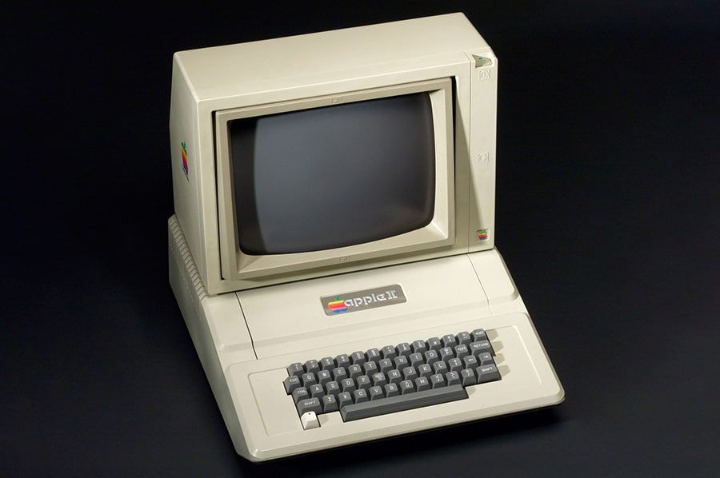

Во второй половине 70-х годов развитие компьютеров достигло того момента, когда создание компьютера, доступного каждому, перестало быть проблемой. Но разработали его вовсе не крупные корпорации и мировые гиганты в производстве техники, а два студента - Стивен Джобс и Стив Возняк. Работали энтузиасты в гараже, создав там "Клуб самодельных компьютеров", который позже превратится в корпорацию "Apple Computer".
Это был первый компьютер, нацеленный на простых покупателей, а не на программистов – ПК не надо было собирать самому, он продавался в полностью готовом к использованию виде. Идея персонального компьютера была настолько успешной, а товар востребованным, что ее с успехом подхватили и другие производители.
